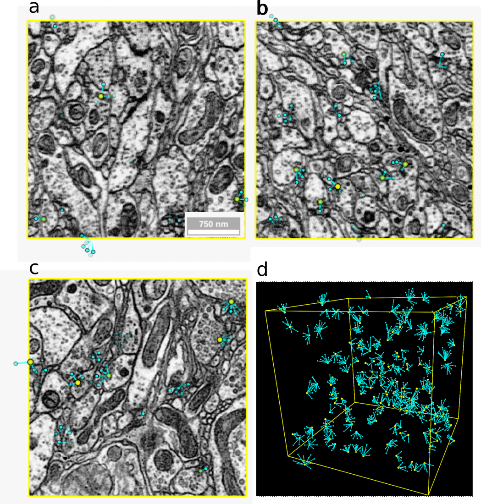
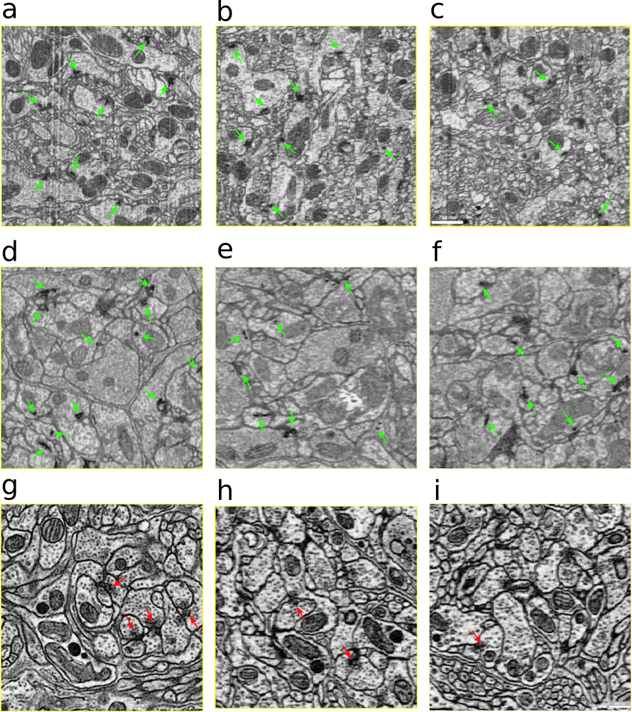

An Out-of-Domain Synapse Detection Challenge for Microwasp Brain Connectomes
This challenge is a part of ISBI 2023, taking place on April 18th-21st, 2023. We will keep the online evaluation open for new submissions, but only results submitted before the challenge deadline (TBD) are considered for the ISBI 2023 challenge workshop. More information about the WASPSYN23 dataset can be found in our paper (TBA).
Abstract
The size of image stacks in connectomic studies now reach the terabyte or even petabyte scale with a great diversity of appearance across brain regions and samples. However, manual annotation of neural structures, e.g., synapses, are time-consuming, which leads to limited training data often smaller than 0.001% of the test data in size. Domain adaptation and generalization approaches were proposed to address similar issues for natural images, which were less evaluated on connectomics data due to the lack of out-of-domain benchmarks. This challenge aims to push the boundary of the out-of-domain generalization methods for large-scale connectomics applications. To facilitate this challenge, we painstakingly annotated 14 image chunks from a diverse set of Megaphragma viggianii brain regions in three whole-brain datasets. Successful algorithms that emerge from our challenge can potentially revolutionize real-world connectomics research and further efforts that aim to unravel the complexity of brain functions.
Tasks Description
In the Megaphragma brain, a synapse consists of a presynaptic terminal, accompanied by an electrondense motif called a T-bar, and multiple postsynaptic sites characterized by electron-dense regions. We design two computation tasks:
Presynaptic T-bar detection: predict the center location of presynaptic T-bar structure from input image volumes.
Postsynaptic site detection: predict the postsynaptic site locations given the presynaptic T-bar locations and the input image volumes.

Synapse detection from 3D electron microscopy (EM) image volume. (a,b,c) The ZY, XZ, and XY planes of the 3D volume with manually annotated synapses; (d) 3D point cloud visualization of the annotated synapses: presynapses represented as yellow dots and postsynapses as cyan dots and edges connected to the corresponding presynapses.
Data Description
We focus on Megaphragma viggianii because it has both a small brain size and complex behaviour.
These wasps have evolved anucleate neurons, likely due to the selective pressure that has driven miniaturization.
The whole head of Megaphragma was stained with heavymetal and embedded in resin. Subsequently, the sample
was imaged using enhanced Focused Ion Beam Scanning Electron Microscope (FIB-SEM) with an isotropic voxel size of 8 × 8 × 8 nm.
Following design choices were made-
Cross-sample variation: We imaged three brain specimens that are illustrated in the figure below. We densely annotated 18
image chunks, each of which has 400×400×400 voxels: five chunks are from specimen one, three chunks are from specimen two,
and ten chunks are from specimen three.
Cross-region variation: Different brain regions include Medulla, GNG, MB calyx, OL, VLP, AL, CBL, PLP, SLP, and etc.
In order to challenge the generalization capability of machine learning models, we provide annotations for one volume per region
above for the third specimen.
Challenging cases: In the mushroom body, multiple Kenyon cell terminals connect to an output neuron terminal, making a
rosette-like structure. Presynaptic terminals of Kenyon cells in a rosette lack platforms and are smaller than typical T-bars.
Dataset split: In summary, we will use 4 volumes for training, 4 volumes for validation, and 10 volumes for testing.
To evaluate the out-of-domain performance of models, we split the 10 annotated volumes in the third specimen into 4/1/5 for train/val/test, use the 3 volumes in
the second specimen as validation, and use the 5 volumes in the first specimen as test.

Images from three specimens. The columns of images are XY,
XZ, and YZ planes from left to right. The images are from specimens
one to three from top to bottom. The arrows indicate T-bars identified
in the section. The red arrows indicate T-bars from mushroom bodies
specifically.
Publication Policy
The three top-performing teams are eligible to participate in a joint publication with the committee submitting to IEEE Transactions on Medical Imaging (TMI). There is a fixed maximum of two authors per team. The committee will also invite teams that submit particularly novel solutions to join as co-authors.
Award Policy
Certificates will be awarded to challenge
top-3 teams (1 winner and 2 runner-ups). An iPad and two
ebook readers will also be awarded to the top-3 teams.
Important Dates
Jan. 1st, 2023: Website launch; release
of training, validation, and single-phase test data
in H5 format; code for metric computation; example
submission and utility functions on GitHub